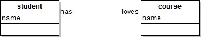

Violet and VPL Database Manual
Don BatoryDepartment of Computer ScienceThe University of Texas at AustinAustin, TX, USA
Violet is a free Java tool for drawing UML class diagrams. Familiarize yourself with Violet by installing MDELite and invoking it:
> java MDL.Violet
and drawing the diagram below:

Draw your own diagrams. When you feel comfortable, proceed to the next section.
Violet Database Schema
Violet encodes a class diagram as an ugly XML file. The MDL.ClassVioletParser tool translates Violet-XML documents into a database that conforms to the following schema:
% Violet (vpl) class database
dbase(vpl,[vBox,vAssociation]).
% type = c(class),i(nterface),n(ote). packages are skipped
table(vBox,[id,type,"name","fields","methods",x,y]).
% type1,type2 = c(lass) or i(nterface)
% lineStyle = ""(solid) or "DOTTED"
% arrow1,2 = V, TRIANGLE, DIAMOND, BLACK_DIAMOND
% bentStyle = "", HV, VH, HVH, VHV
table(vAssociation,[id,cid1,type1,"role1","arrow1",cid2,type2,"role2","arrow2","bentStyle","lineStyle","middleLabel"]).
Some notes:- vBox is the name of a table with 6 columns.
- id is the internal identifier of a vBox tuple (class, interface, or note)
- type is "c" class or "i" interface or "n" for note
- name, fields, methods are single-quoted strings which contain the name of the class, the string of fields and methods for that class.
- x,y are coordinate positions at which this class is displayed.
- vAssociation is a table with 11 columns.
- id is the internal identifier of an association.
- cid1,cid2 are identifiers of classes or interfaces to be connected.
- type1,type2 are enums with values "c" for class or "i" for interface to type cid1 and cid2.
- role1,role2 -- is any text eg name and/or cardinality to be displayed.
- arrow1,arrow2 -- only values {V, NONE, TRIANGLE, DIAMOND, BLACK_DIAMOND}, where NONE is ''.
- linestyle -- only values {SOLID, DOTTED}.
- bentStyle -- only values {STRAIGHT (or blank),HV,VH,HVH,VHV}.
- middleLabel -- should be blank, but this is the middle label on a Violet association
Let SC.class.violet be the Violet-produced XML file for StudentCourse. The following MDELite command translates this file into a VPL database SC.vpl.pl:
> java MDL.VioletClassParser SC.class.violet SC.vpl.pl
The database that is produced is:
dbase(vpl,[vBox,vAssociation]).
table(vBox,[id,type,"name","fields","methods",x,y]).
vBox(ClassNode0,c,'Student','name','',160.0,180.0).
vBox(ClassNode1,c,'Course','name','',411.0,177.0).
vBox(ClassNode2,c,'Student','name','',619.0,181.0).
vBox(ClassNode3,c,'Course','name','',870.0,178.0).
vBox(ClassNode4,c,'Student','name','',159.0,300.0).
vBox(ClassNode5,c,'Course','name','',410.0,297.0).
vBox(ClassNode6,c,'Course','name','',870.0,296.0).
vBox(ClassNode7,c,'Student','name','',619.0,299.0).
vBox(ClassNode8,c,'Course','name','',410.0,421.0).
vBox(ClassNode9,c,'Student','name','',162.0,424.0).
vBox(ClassNode10,c,'Course','name','',870.0,416.0).
vBox(ClassNode11,c,'Student','name','',614.0,419.0).
vBox(ClassNode12,c,'Course','name','',409.0,529.0).
vBox(ClassNode13,c,'Student','name','',153.0,531.0).
vBox(ClassNode14,c,'Course','name','',1275.0,184.0).
vBox(ClassNode15,c,'Student','name','',1035.0,179.0).
vBox(ClassNode16,c,'Student','name','',1038.0,290.0).
vBox(ClassNode17,c,'Course','name','',1289.0,287.0).
vBox(ClassNode18,c,'Course','name','',1291.0,406.0).
vBox(ClassNode19,c,'Student','name','',1040.0,409.0).
vBox(ClassNode20,c,'Person','name','',848.0,580.0).
vBox(ClassNode21,c,'Person','name%','',646.0,567.0).
vBox(ClassNode22,c,'x','','',1139.0,566.0).
vBox(ClassNode23,c,'y','','',1339.0,575.0).
table(vAssociation,[id,cid1,type1,"role1","arrow1",cid2,type2,"role2","arrow2","bentStyle","lineStyle","middleLabel"]).
vAssociation(A0,ClassNode0,c,'has','',ClassNode1,c,'loves','','','','').
vAssociation(A1,ClassNode2,c,'','',ClassNode3,c,'','','','','enroll').
vAssociation(A2,ClassNode4,c,'','',ClassNode5,c,'takes','','','','').
vAssociation(A3,ClassNode7,c,'','',ClassNode6,c,'','BLACK_DIAMOND','','','takes').
vAssociation(A4,ClassNode9,c,'','',ClassNode8,c,'takes','','','','').
vAssociation(A5,ClassNode11,c,'','',ClassNode10,c,'','DIAMOND','','','takes').
vAssociation(A6,ClassNode13,c,'*','',ClassNode12,c,'*','','','','takes').
vAssociation(A7,ClassNode15,c,'5','',ClassNode14,c,'2','','','','enroll').
vAssociation(A8,ClassNode16,c,'4','',ClassNode17,c,'','BLACK_DIAMOND','','','takes').
vAssociation(A9,ClassNode19,c,'4','',ClassNode18,c,'','DIAMOND','','','takes').
vAssociation(A10,ClassNode20,c,'','',ClassNode20,c,'','','VHV','','parents,children').
vAssociation(A11,ClassNode21,c,'parents','',ClassNode21,c,'chlidren','','HVH','','').
vAssociation(A12,ClassNode22,c,'','',ClassNode22,c,'','V','HVH','','boo').
vAssociation(A13,ClassNode23,c,'','',ClassNode23,c,'','V','HVH','','foo').
VPL Constraints
There indeed are VPL constraints. I have not posted them, as they are good examples for homework assignments. They are similar to those for YPL (VPL's Yuml counterpart).